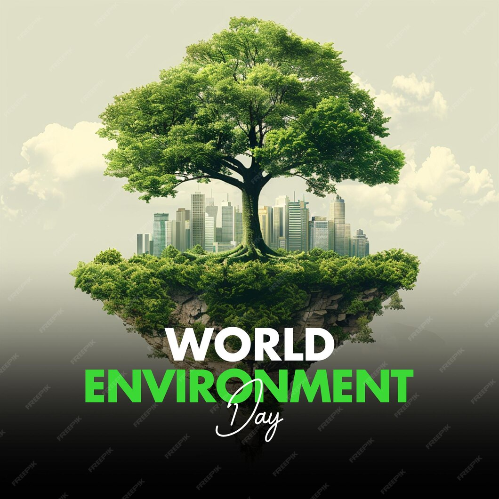

About Environmental Day
Environmental Day is celebrated worldwide to raise awareness about protecting our planet. It reminds us of the importance of clean air, water, and natural resources.
World Environment Day, observed on June 5th each year, is a significant global event led by the United Nations Environment Programme (UNEP). Established in 1972 during the UN Conference on the Human Environment, this day serves as a worldwide platform to inspire awareness and action for environmental protection. Every year, World Environment Day highlights a specific theme and designates a host country to spearhead celebrations, sparking discussions and solutions for pressing environmental issues. The day focuses on educating and mobilizing communities to address urgent concerns like climate change, biodiversity loss, deforestation, pollution, and resource depletion. These issues have widespread impacts, affecting ecosystems, human health, and economic stability, making it essential for people, organizations, and governments to engage in proactive conservation and sustainability practices. Each year’s theme provides a focus on current environmental challenges, aiming to inspire both individuals and large-scale groups to participate in meaningful action. Themes in recent years have included “Ecosystem Restoration”, emphasizing the need to revive natural habitats, and “Beat Plastic Pollution,” urging a global reduction in plastic waste that contaminates our land and waterways. These themes guide the event's agenda and encourage global participation across all levels. Events on World Environment Day often include a range of activities such as tree-planting campaigns, clean-up drives, educational workshops, recycling initiatives, conservation projects, art exhibits, and rallies. Through these activities, people are encouraged to take small but impactful steps to protect the environment. The theme acts as a call to action, urging everyone to adopt behaviors and practices that promote environmental health. A notable aspect of World Environment Day is its inclusivity. People of all ages, backgrounds, and nationalities are encouraged to take part, with an understanding that environmental responsibility is a shared duty. Governments worldwide also participate by enacting policies, funding green initiatives, and enforcing environmental laws to support sustainable development goals. The role of businesses and industries is also highlighted, encouraging companies to reduce their carbon footprint, adopt sustainable practices, and develop environmentally friendly products and processes. Many companies commit to World Environment Day by pledging to reduce emissions, minimize waste, and promote eco-friendly products. Similarly, educational institutions hold workshops, seminars, and nature-based activities to instill environmental responsibility in young minds. With the growing influence of social media, World Environment Day has also become a digital movement. Online campaigns, hashtag challenges, and virtual events allow people across the globe to unite for environmental causes. Influencers, activists, and everyday citizens share ideas, knowledge, and experiences, creating a sense of global solidarity and action. World Environment Day has evolved to address increasingly complex environmental issues over the years. Climate change, for instance, has become a central focus due to its far-reaching effects, from extreme weather patterns to the loss of biodiversity. The day encourages people to adopt practices that reduce greenhouse gas emissions, conserve water and energy, and switch to renewable energy sources. Governments are also urged to meet international climate commitments, such as those outlined in the Paris Agreement. Biodiversity loss is another urgent issue tackled on World Environment Day. Activities like excessive deforestation, illegal wildlife trade, and pollution threaten countless species. Biodiversity is crucial for maintaining ecosystem balance, and the day emphasizes the importance of conserving natural habitats, protecting endangered species, and promoting biodiversity-friendly policies. In addition, World Environment Day draws attention to waste management. From single-use plastics to e-waste, managing waste responsibly is critical for reducing pollution and preserving natural resources. Campaigns promote recycling, composting, and upcycling, showing that simple steps can help mitigate waste and reduce environmental impact. Water conservation is another area of focus, particularly in regions facing scarcity. Pollution and wastage of water threaten ecosystems and human health, and World Environment Day encourages methods to conserve and clean water sources. People are urged to be mindful of their water usage, while industries are encouraged to minimize pollution in water bodies and adopt sustainable practices. The role of technology and innovation is celebrated as a powerful tool for addressing environmental challenges. From renewable energy solutions to sustainable agriculture, advancements in technology are transforming how we approach environmental conservation. World Environment Day serves as a platform for sharing innovative solutions, with startups, research institutions, and tech companies showcasing green technology that can make a difference. Young people play a crucial role in World Environment Day. As the generation that will inherit the planet, their involvement and leadership are vital for long-term change. Schools and youth organizations around the world participate in clean-up campaigns, tree-planting activities, and educational events, fostering a sense of responsibility and passion for environmental stewardship. Ultimately, World Environment Day is a reminder that we all have a role to play in creating a sustainable future. The cumulative impact of individual actions—reducing plastic use, conserving water, planting trees, and recycling—can significantly contribute to a healthier planet. By adopting sustainable habits and supporting environmental initiatives, we can work together to ensure that future generations inherit a planet that is vibrant, diverse, and sustainable. Whether through community activities, online advocacy, policy-making, or personal lifestyle changes, World Environment Day is an opportunity for everyone to reflect on their environmental impact and commit to making positive changes. The day's message is simple yet profound: “Only One Earth”—a reminder that we have a responsibility to protect and preserve the natural world for generations to come
